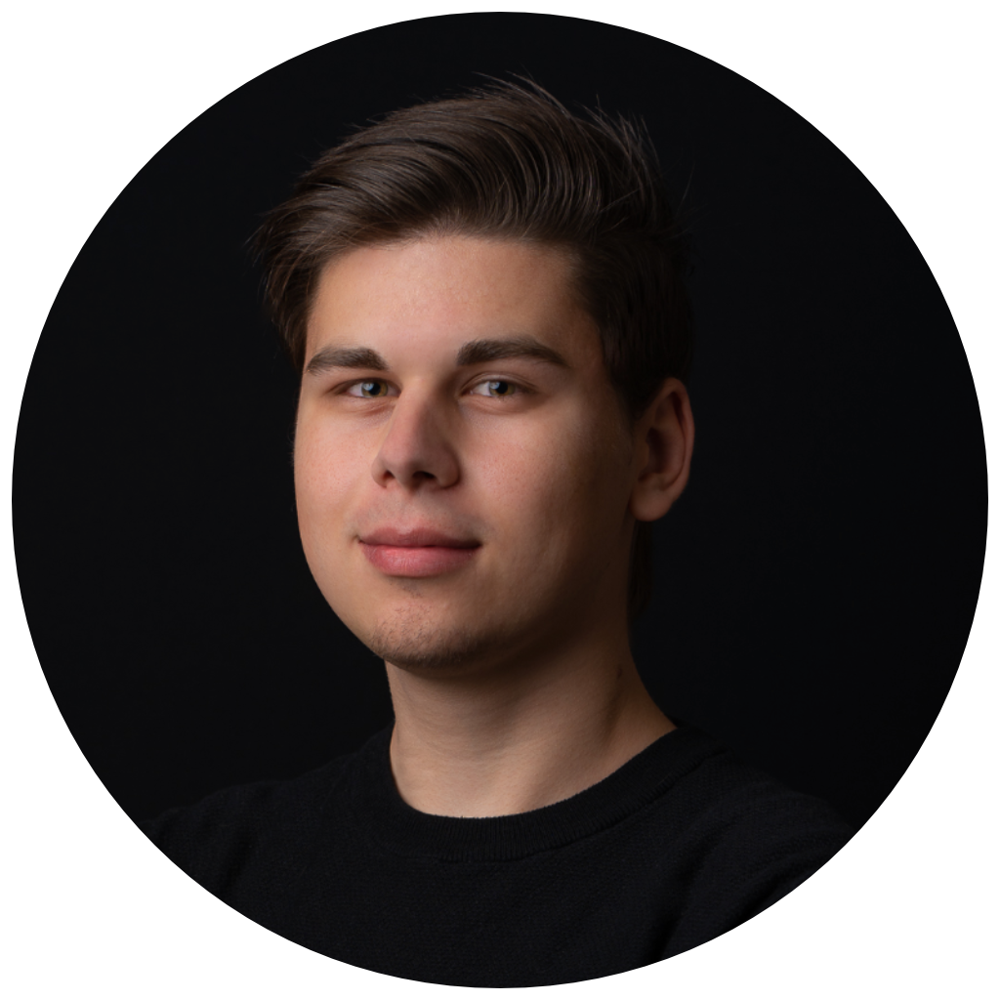

Michal Spano

I’m a graduate student with a strong background and passion in computer programming, an interest in science & research, and content creation; born in Bratislava (Slovakia), now based in Gothenburg (Sweden). I’m particularly interested in (functional) programming, prog. language design, software verification, linguistics, design, and teaching. I’m also an active contributor (5k+ contributions) of various projects on GitHub. I’ve been a private tutor in science for several years and have delivered 750+ lectures.
Education
Master of Computer Science, Chalmers University of Technology Expected 2027
- Specialization: functional programming, compiler construction, type and category theory.
- Exchange: Leiden University (the Netherlands), 6-month at the faculty of Mathematics (graph theory & quantum computing).
Bachelor of Software Engineering, Chalmers and Gothenburg University 2022 – 2025
- Honors: Graduated with distinction; minor in Mathematics (60 ETCS)
- Thesis: “Evaluating Trade-offs of Quantized LLMs for Requirements and Test Alignment”*
- Organized Hackathons, workshops and represented students in decision-making bodies through the student union.
Work Experience
Developer Mar 2026 – Present
Yolean AB. Gothenburg, Sweden
- Working on AI integration/ agentic workflows for the purpose of automation of UI/UX testing and other development tasks
- Technologies used: Python, Shell & Bash, JavaScript, K8
DevOps Intern Jun 2026 – Aug 2026
AB. Volvo Gothenburg, Sweden
- Developed pipelines for automation, quality assurance, and product release.
- Technologies used: Python, Shell & Bash + Linux, Jenkins
Software Engineering Intern Mar 2025 – Sep 2025
Tesla, Inc. Amsterdam, Netherlands
- Helped to develop and design diagnostic interfaces for Tesla car touchscreens for vehicle maintenance and repair.†
- Developed software instruments that facilitate service automation for (among others) Robotaxis by connecting service & development teams.
- Technologies used: TypeScript + React, Rust, Haskell, Shell + Linux
Research & Teaching Assistant Sep 2023 – Mar 2025
Chalmers University of Technology Gothenburg, Sweden
- Evaluated the impact of (i) AI-assisted tools, (ii) social annotations for programming in higher education
- Assisted with administrative tasks and coursework assignments and supervised students in courses: Object-Oriented Programming, C & Embedded and Realtime Systems, and Requirements Engineering.
- Technologies used: C/C++, Java, R, MATLAB
Developer Oct 2024 – Mar 2024
Algeno AB Gothenburg, Sweden
- Focused on developing AI-driven tools to optimize energy use and temperature control in homes and workplaces.
- Technologies used: TypeScript + Next.js, Python, pSQL, Docker
IT Consultant & Developer Dec 2022 – Nov 2023
Chalmers Teknologkonsulter AB Gothenburg, Sweden
- Led a project for a mobile-first application for the Regional Cancer Center (Sweden) aimed to help detect melanoma among patients.
- Technologies used: TypeScript + React Native, Scala
Fullstack Web Developer May 2021 – Jun 2023
Klas, s.r.o. Bratislava, Slovakia
- Designed and developed the company’s website & trivia platform for the public domain with contemporary visuals.
- Technologies used: JavaScript + Next.js, Python, mySQL
Skillset
SCRUM, Agile Workflow, Project Management, DevOps, Robotics, Graphic & Product Design, Teaching, Academic Writing, Languages and Translations.
Awards & Certificates
Languages: Slovak, English (Native); Czech, Swedish (C1); German, Dutch (B1–B2)
Projects
- An interactive regex parser and an interpreter for a subset of POSIX regex written in Haskell.
- The project features a vizualizer of the underlying data structures.
- A microservices-based full-stack webapp to manage dentist appointments.
- It provides tools for dentists to organize their schedule and communicate with clients.
- An exam archival system with a dedicated CI/CD pipeline which generates a searchable static website of exam material for students.
- An interactive study planner for Software Engineering students at Gothenburg University.
- It features a comprehensive view with all course information and pre-requisites among courses (represented as a graph-like data structure).


![github]()

![web]()